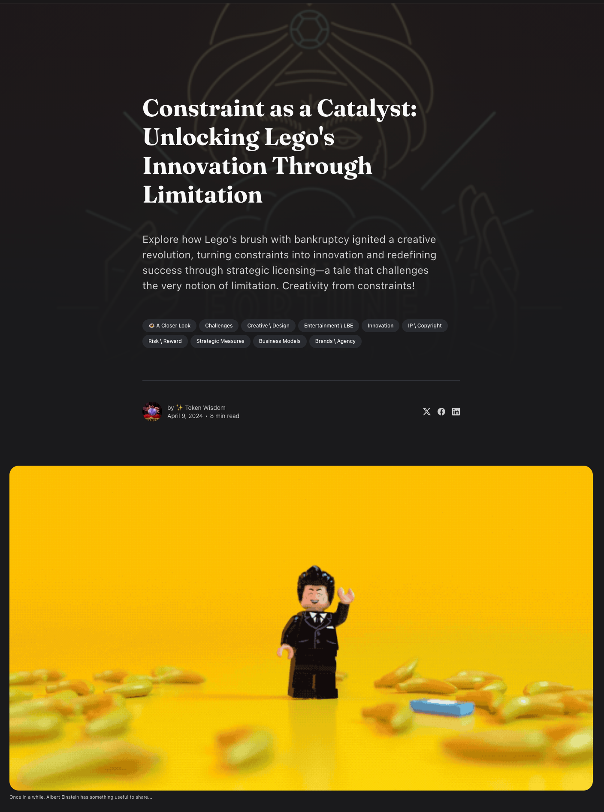

:: Now begins a story...
May I present to you, a finely curated section of a fine collection of the wonderful web we weave with a weekly roundup of bits and pieces from the far corners of the super information highway that I like to call — Token Wisdom ✨


“One bad chapter does not make the book of your life."

A curated wisdom of consumed knowledge and token allocation.
↳ March 31st 🧿 April 6th, 2024
📖 Table of Contents

Welcome to Token Wisdom
A Synthesis of Innovation and Thought
Welcome, curious minds and forward-thinkers, to Token Wisdom, where the possibilities of tomorrow are brought into the clarity of today. Step into our shared odyssey, an emblematic confluence of human ingenuity, technology's stride, cultural depth, and the indomitable spirit of entrepreneurship.
🎉 Newest / Latest – Your Beacon into Innovation
#DataEmbarkation: Traverse the transformative shift as Google propels privacy empowerment forward.
#StoriaverseSensation: The cutting-edge integration of narrative and technology redefines storytelling's horizons.
#PrivacyTechPioneers: Witness the evolution of personal privacy through the protective lens of robotics.
And more... Unravel the Full Spectrum of Innovation
👁️ A Closer Look
Constraint as a Catalyst: Unlocking Lego's Innovation Through Limitation
A study on how constraining conditions can breed creativity and drive success.
Voyage into Digital Enlightenment
📺 Time Well Spent – Engage with Purpose
#AIFieldPlay: Examine the alchemy of AI with traditional football, a dance of data and athleticism.
#WitHopefully,OutputStreamsScam: Peer into the depths where financial fraud weaves its darkened net and hope aims to pierce through.
#GameBoyGenius: Unravel the iconic pathway of a gaming giant's journey from pixels to hearts.
And more... Delve into Stories Worth Your Time
Our current edition intertwines past and present, bridging classic wisdom with the surging tides of modern paradigms. Whether honing in on the capricious fate of animatronics towards sentient storytelling, considering the reflective echoes of virtual spaces, or wrestling with the ethical entanglements of AI divvying tasks better than a seasoned maestro, we lay the intricate webs of technology and its silent dialogue with humanity under the microscope.
Embark on the Journey toward Token Wisdom
In this complex interplay of technology and values, we recognize the dual nature of our times: a life balanced between physical interactions and online identities, where creating digital personas reflects our moral compass.
🎖️ A highly curated collection of carefully consumed knowledge.
🎉 Newest / Latest
100% Authentic Humanly Chosen

From the ethereal realm where privacy collides with digital footprints, to robotic guardians of anonymity and the cinematic musings of AI, this narrative mosaic animates our quest for wisdom amidst an algorithmic odyssey, unfurling tales that oscillate between the technology we wield and the humanity we safeguard.
#StoriaverseSensation: Storiaverse launches an innovative app combining animated video with written content, redefining immersive storytelling.
#RoboticPrivacy: Researchers develop privacy-preserving robotic cameras capable of obscuring images to the point of anonymity, ensuring personal visual data stays protected.
#AllocationEconomy: The knowledge economy is on the brink of evolution as we transcend into an era that values resource allocation and management over traditional knowledge work.
#GeminiFilmFest: Google Gemini AI crafts an unexpectedly brilliant and diverse movie watching list that celebrates the underdog, personalized for a unique viewing experience.
#AmazonWalkOutWoeful: Amazon abandons its "Just Walk Out" technology in cashier-less stores, unveiling the surprising truth about its reliance on hidden human labor.
#AIGadgetEra: Groundbreaking AI gadgets like the AI Pin and smart glasses make their debut, promising a future where technology seamlessly anticipates and reacts to human needs.
#ArtisticOasis: Bombay Beach in California hosts an art Biennale against a unique desert backdrop, proving to be a haven for avant-garde artists and creative expression.
#AngerMythBusted: Contrary to popular belief, venting does not reduce anger; instead, calming activities like meditation and deep breathing are scientifically proven to be effective.
#DisneyAnimatronicsMagic: Walt Disney Imagineering reveals its most advanced Audio-Animatronics figures yet in Tiana's Bayou Adventure, setting new entertainment benchmarks.

The Full Breakdown - Top 10 of the Week
100% Human Curated Collection of Content
👁️ A Closer Look
Attempts to explore a subject and share my thoughts.



A Closer Look: Explorations in Technology
Weekly essay in the areas of blockchain, artificial intelligence, extended reality, quantum computing, and all the bits and pieces.


📺 Time Well Spent
Top Ten of the Time I Spend

This is a kaleidoscope of innovation, where the legacy of green-hued gaming nostalgia meets the modern sagas of AI sports strategies, digital titans under fire, and the intrepid journeys within virtual worlds and beyond.
#FinanceFrauds: The rise of unchecked financial scams reveals the stark contrast between the restriction-laden honest businesses and unchecked fraudulent schemes.
#GameboyGenius: The iconic Gameboy's simple yet innovative design revolutionized portable gaming amidst a tech landscape racing for power and graphics.
#AttentionAI: Transformers' attention mechanisms redefine deep learning by enhancing models' focus on contextual data relevance.
#TechAntitrust: Tech behemoths face rigorous scrutiny as regulators mount pressure globally to dismantle suspected anti-competitive monopolies.
#AppleWWDC: Apple teases transformative updates for its operating systems and potential hardware innovations approaching WWDC 2024.
#DocumentaryDollars: A YouTuber unlocks the secrets to creating a lucrative channel by focusing on Evergreen documentary content and finance company sponsorships.
#VRStorytelling: Felix & Paul Studios pioneer immersive storytelling in VR, crafting experiences that extend from the International Space Station to lunar landscapes.
#AIBillionaires: Billionaires compete in a covert race to dominate the burgeoning field of artificial intelligence and its cross-industry impact.
#MOCAPMagic: Woody’s NYC studio merges creativity and motion capture technology, innovating the world of virtual production and real-time animation.
If you watch these ten videos, statistics have proven your IQ will go up, like, 2 points or something like that. I saw it on Perplexity.*

For a Full Breakdown of Time Well Spent
A weekly top ten list of YouTube videos that caught my attention.

✨Token Wisdom
Knowledge Transmuted
In these fleeting passages of innovation and reflection, we have wandered through digital hallways that unveiled the Newest Latest and spent moments reflecting upon the essence of Time Well Spent. We observed the persistence of privacy in Google's surrender to transparency, the power of storytelling evolution through Storiaverse's fusion of video and written word, and the technological finesse of Disney's animatronics.
Concurrently, we considered the ethical quagmires faced by Amazon's invisible workforce beneath AI's shiny veneer, AI's influence over the traditionally human-dominated sports, and the constant war between ethics and progress in tech's hallowed arenas. It's evident that our journey from sports fields and the bracing air of Bombay Beach to tangled neurons of AI debate forms a patchwork quilt of human endeavor and technological triumph.
The coil of history reminds us that innovation, akin to the ouroboros, often eats its own tail—today's breakthroughs become tomorrow's clichés, and today's ethical standpoints may puzzle the ethicists of the future.
Yet beware of complacency, for in comforting repetition lies stagnation. To celebrate the Gameboy while scorning the AI Pin is to deny the march of progress its due fanfare—the same genius that packed entertainment into a child's pocket seeks to implant intuition into machinery.
"Let us dare to dream with the discipline of scholars and the heart of poets. Wisdom lies not in the sterile safety of hindsight but in a bold stride into the delicious unknown, where imagination crafts the keys to unlock the unopened doors before us."
This, then, is our guiding beacon as we package this edition. May the theme resonate within you, prompt lively debate, stir the pot of quiet thoughts, and herald the dawn of inquiry—that we may all contribute to the perpetual motion machine called curiosity, propelling humanity beyond the observable and quantifiable, into the realm of the infinite.
Until we meet again on these digital pages, may your journey be rich with wisdom, and your lives echo with the laughter of discovery.
⏰
Embrace the pursuit of knowledge, for it's in learning that we forge the tools to shape a better tomorrow. Sign up for more Token Wisdom and carry the torch of foresight into the fathomless domains of innovation and beyond.
Until next time: stay smart, stay kind, and definitely stay weird!
Become a Token Wisdom subscriber—Illuminate your inbox with the light of knowledge. ✨

Thank you for cruising by the Cult of Innovation
We’re making some Stone Soup here and if you enjoyed this amuse-bouche of news compilations in bite-sized morsels, please share with your friends and help feed a community. Mmmm. #nomnom.